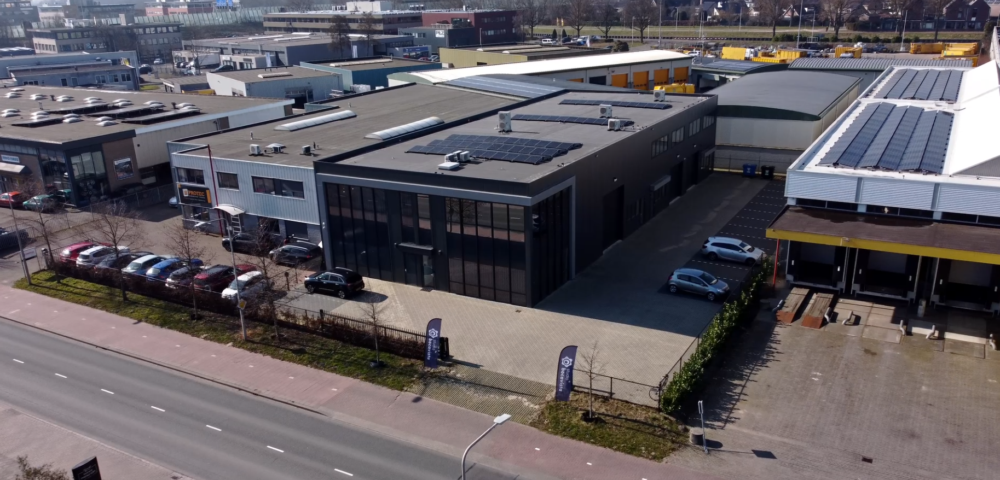

Studio Bocavista - Stage
Achter de schermen · 2026
Over dit werk
Tijdens mijn stage kreeg ik beelden opgeleverd die waren gefilmd door een vorige stagiar. Deze beelden lieten achter de schermen footage zien van een webinar van PFFH (Plants and Flower Foundation Holland). Aan mij werd gevraagd of ik deze beelden wilde omzetten in een vette achter de schermen video voor het bedrijf.
In deze video is een enorme mix te zien van transities, colour grading en een klein beetje AI (kan jij spotten waar het zit?)

Project Media